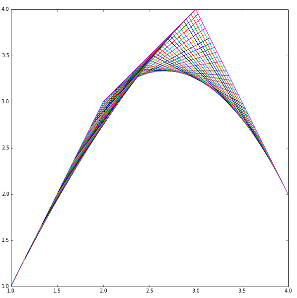
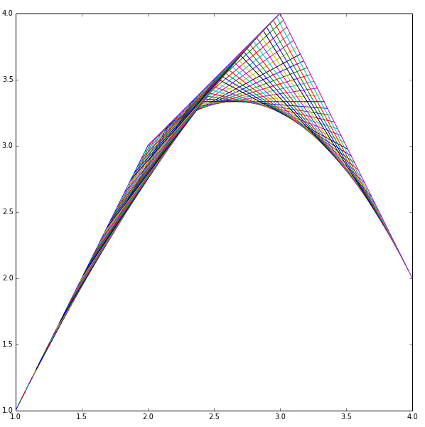

About Me


I am a senior at the University of Vermont majoring in mathematics and statistics and minoring in computer science.
My interests lie in the utilization of the incredible power that modern data affords us to help better the world.
I don't think that one should need a degree in a STEM field to be able to benefit from this data. Due to this, one of my main interests is visualizing data to accurately reflect the underlying trends without all of the fluff that data scientists love to layer on.
My current research interests include: statistical genetics, data visualization and mathematical biology/ ecology modeling.
When I am not in "school mode" I love to bike places and appreciate architecture whilst doing so.
The curve at the begining of this page is the beautiful logistic distribution with mu fixed at 0.5 and theta varying between .1 and .9.
Have a fantastic day!


 
